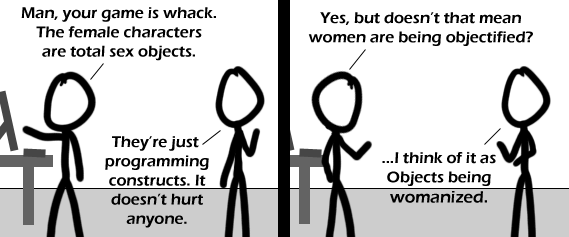

Comic JK 419
When I Feel Like It
⇤
<
?
>
⇥

⇤
<
?
>
⇥
Forum
.
RSS
.
Digg
.
Facebook
.
Reddit
.
Twitter
.
Stumbleupon
restored from [nope]. Enter your thoughts on number 419 here. Please, no spamming, trolling, or phreaking. farts and queefs. that is all. Your mother likes when I womanize her objects. A good way to think about it, indeed. I disagree. They aren't being "womanized" if they are being turned into sex objects, since women AREN'T sex objects. correctly >Who let you out of the kitchen? >>'Womanize' means 'to pursue women lecherously,' so the comic uses it correctly >I find it highly amusing that the programmer continues to think the code is more important than the people in every case. AHHHH!!! I thought of that months ago! Great comic! #projectcaossi[dawt]byethost18[dawt]com/files/scripty-alpha-beta-gamma-buggy.zip & var 0 ! loop $ top % top + var 1 (var < 10 )^loop class women { public: void talk(char* subject); int boobSize; private: char* parts; int vaginaWidth; //increment me! void love(void); }; >will you marry me? >Does love() being void mean that women never return love? >>Since its argument list is void also, it shows that the love that you take is equal to the love you make. > don't forget Sandwich makeSandwich(void); >> I think that one is Sandwich makeSandwich(boolean sudo); >> Shouldn't "women" be a collection of class "woman"? >>> Or vice-versa. > This comment collection of computer nerdiness made me so happy Writing wack "whack" is wack. Just sayin'... > Firefox spell-check disagrees with you. >> It's slang - Firefox isn't trendy enough. >>> "Trendy" hasn't been used for decades... >>>> No, it was used in the comment before yours, which was published more recently than a decade ago. =P Holy crap is this ever sexist! I'm going to write an angry letter to my senator.